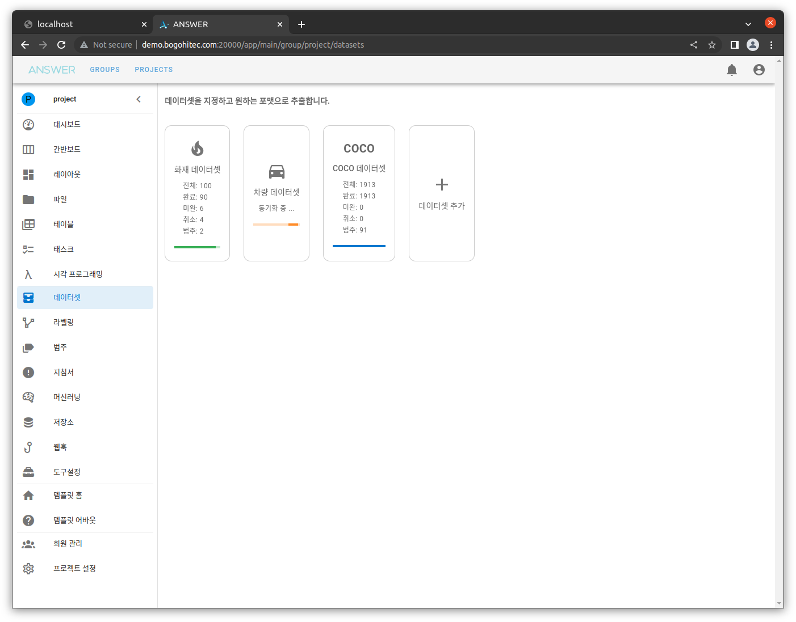
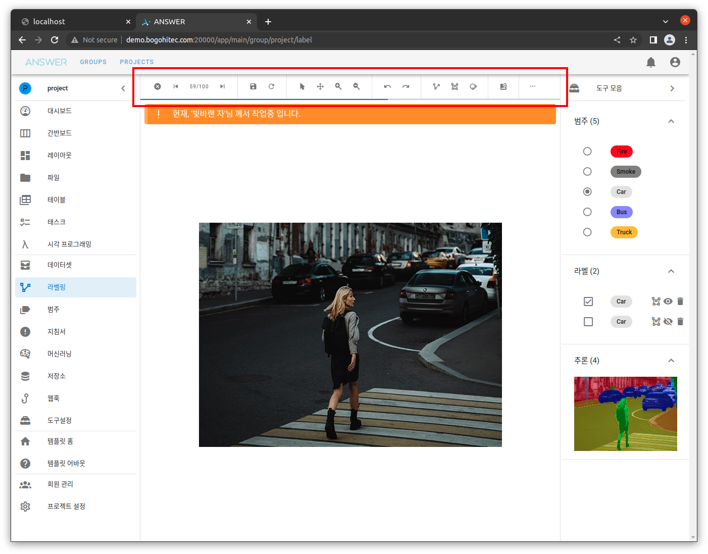
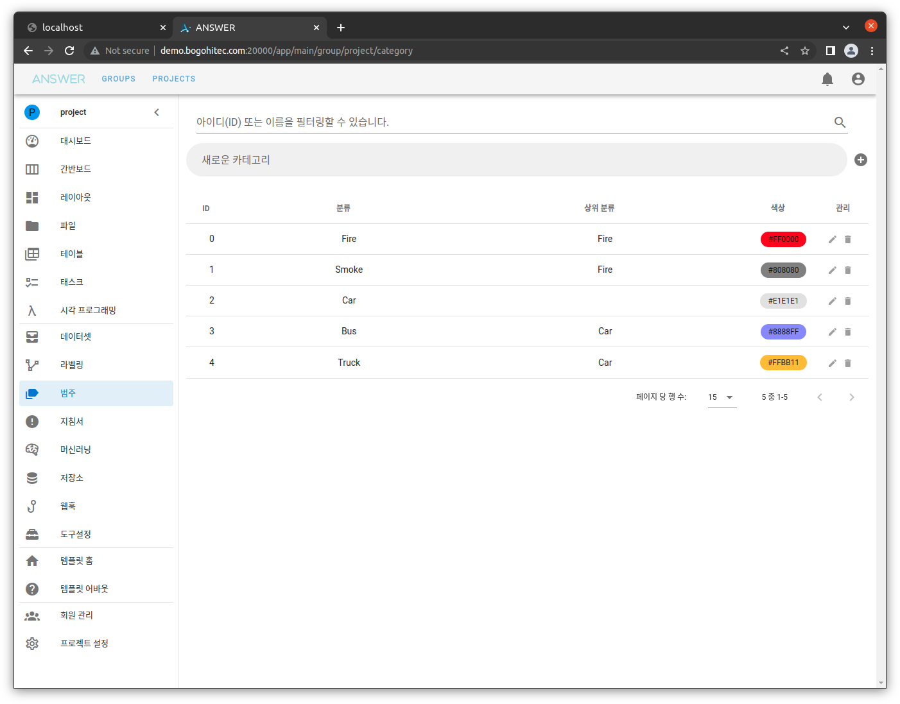
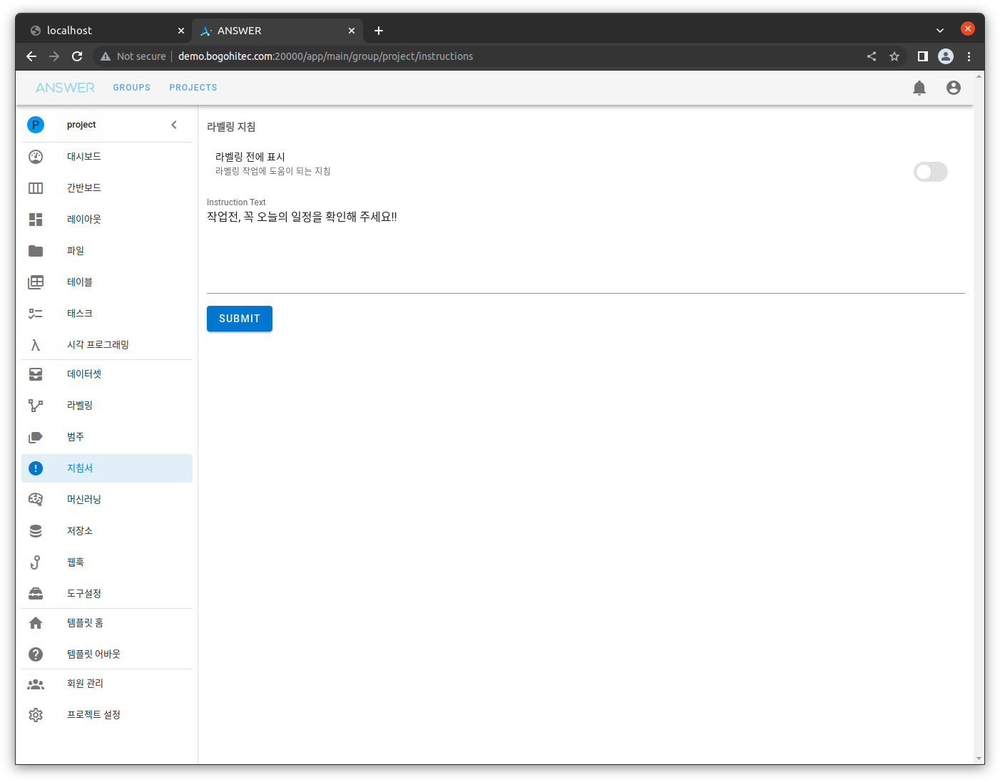
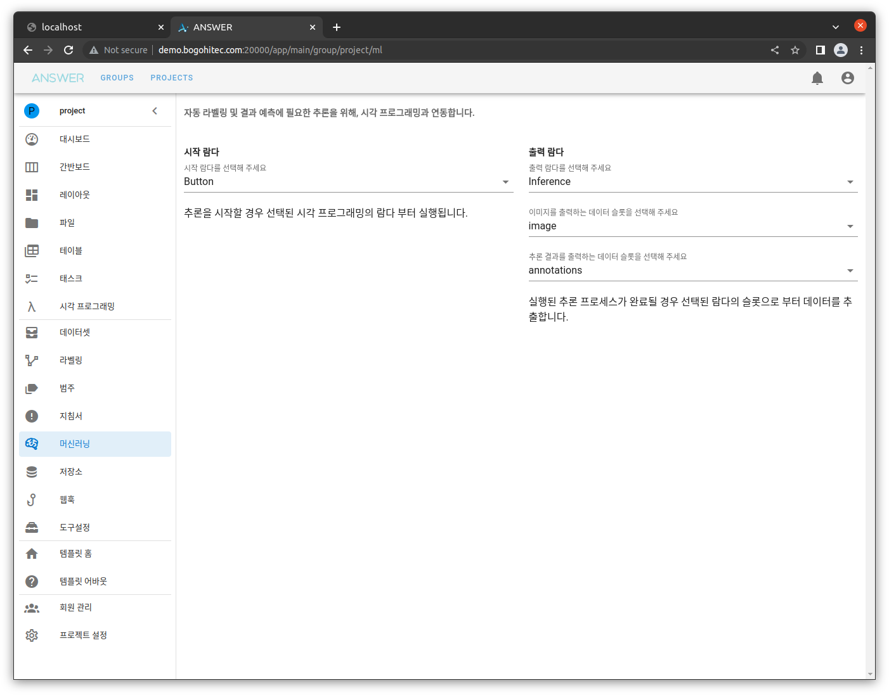
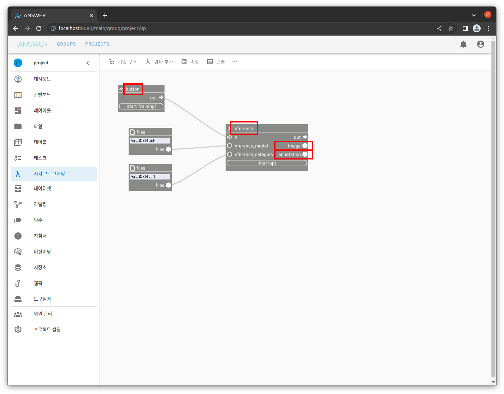
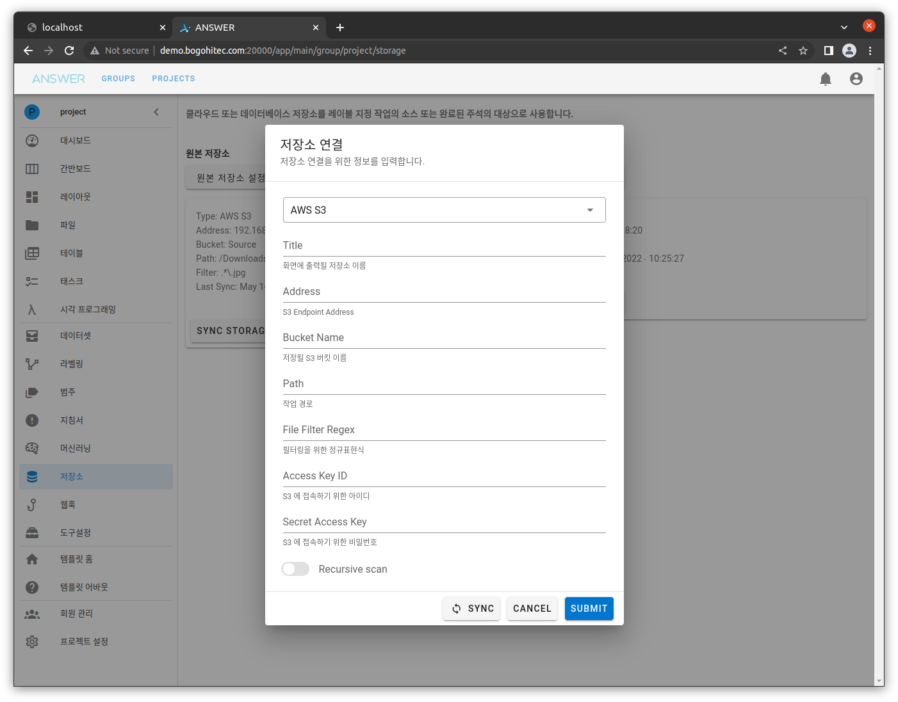
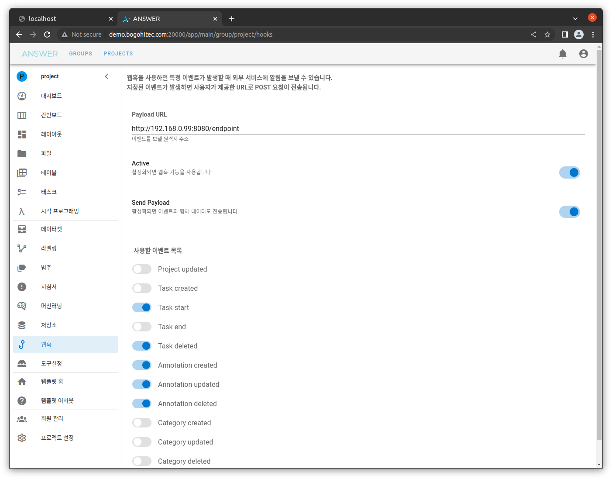
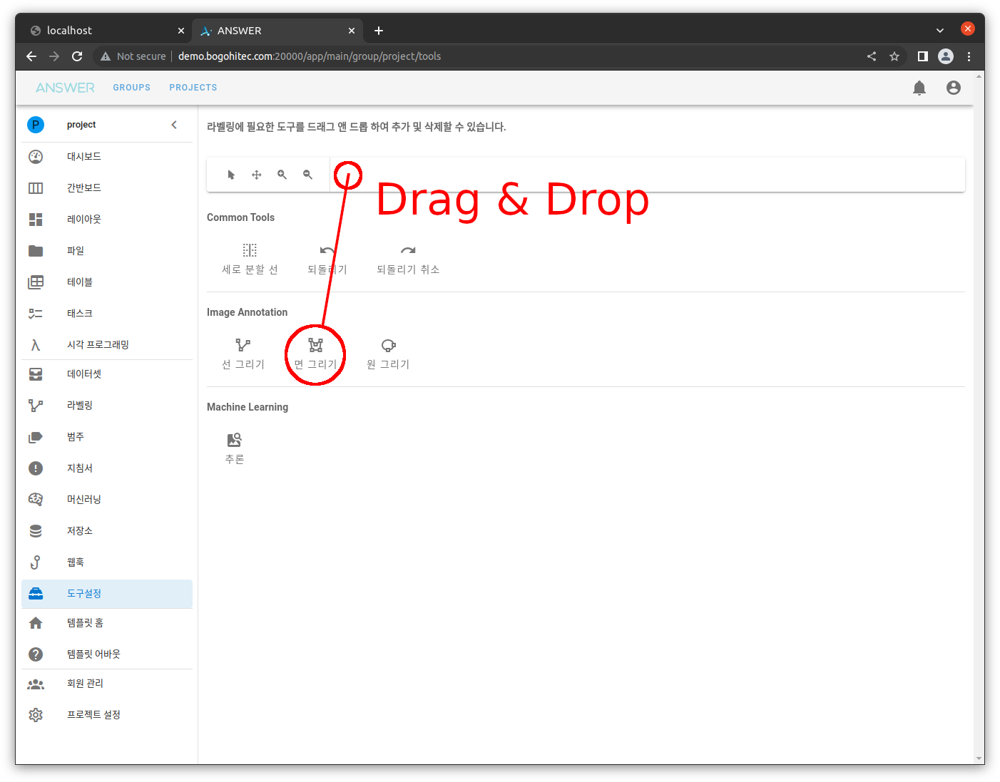

Annotation Tools#
개요#
머신러닝을 위한 라벨링 작업 도구 모음 입니다.
하나의 프로젝트에 가입된 모든 회원들은 수정된 라벨링 레이아웃, 데이터셋, 범주(Category) 등을 공유합니다.
데이터셋#
라벨링 데이터셋 그룹을 조직화 합니다.

데이터셋을 추가하거나 만들어진 데이터셋을 COCO JSON FORMAT, VOC XML FORMAT 등 여러 포맷을 추출할 수 있습니다.
라벨링#
라벨링 작업을 진행할 수 있는 메인 화면 입니다.

상단, 붉은 박스에 해당 하는 도구바 부분을 후에 설명할 도구설정 화면에서 제어할 수 있습니다.
범주#
라벨링에 사용될 범주(Category)를 추가하거나 삭제할 수 있습니다.

선택된 색상은 라벨링시 선 또는 면 색상에 영향을 줍니다.
지침서#
라벨링 시작 직전에 팝업 알람으로 출력할 공지사항 입니다.

머신러닝#
라벨링시 추론 결과를 실시간으로 확인하거나 자동 라벨링에 사용할 머신러닝 규칙을 적용합니다.

Visual Programming 에서 구성한 시작 람다와 출력 람다를 선택하면

해당 그래프가 실행되고, 실행 결과를 자동 라벨링 결과로 사용됩니다.
저장소#
프로젝트에 사용할 원격 저장소를 연결할 수 있습니다.

원본 저장소 는 원본 데이터가 저장된 위치를,
결과 저장소 는 라벨링 결과를 저장할 위치를 선택할 수 있습니다.
저장소는 AWS S3 와 같은 클라우드 저장소 뿐만 아닌, FTP, SMB 등도 선택할 수 있습니다.

웹훅#
Annotation 도구 사용시 발생되는 여러 이벤트를 원하는 웹 서버로 전송(HTTP Request)할 수 있습니다.

이벤트는 다음과 같은 것들이 있습니다.
프로젝트 업데이트
작업(Task) 생성
작업(Task) 시작
작업(Task) 종료
작업(Task) 삭제
라벨(Annotation) 생성
라벨(Annotation) 업데이트
라벨(Annotation) 제거
범주(Category) 생성
범주(Category) 업데이트
범주(Category) 제거
도구설정#
라벨링에 필요한 도구를 추가/삭제할 수 있습니다.

하단의 도구 중 원하는 기능을 드래그 & 드롭으로 상단 툴바에 배치하면 라벨링 페이지에서 해당 도구를 사용할 수 있습니다.